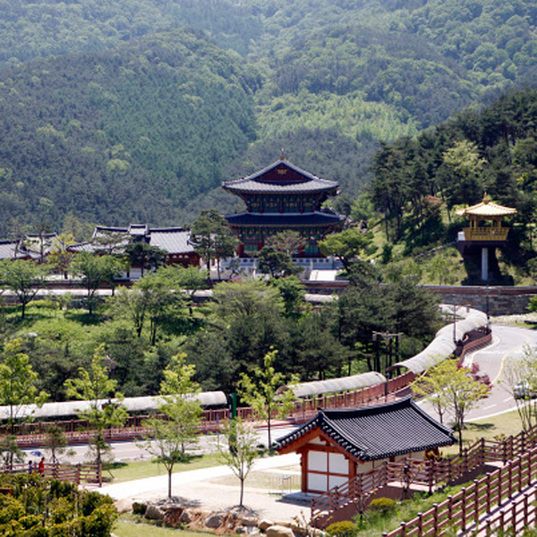

Коре́я — географическая территория (страна), включающая Корейский полуостров и прилегающие острова и объединённая общим культурно-историческим наследием. В прошлом единое государство. На севере имеет сухопутную границу с Китаем и Россией. К востоку от Кореи находятся Японские острова. В 1945 году после поражения Японии во Второй мировой войне территория Кореи, в то время входившей в состав Японии, была разграничена на две зоны военной ответственности: советскую — к северу от параллели 38° с. ш. и американскую — к югу от неё. Впоследствии, в 1948 году, на территории этих зон возникли два государства: Республика Корея (самоназвание — Тэханмингук, то есть Республика Тэхан) на юге и Корейская Народно-Демократическая Республика (самоназвание — Чосон Минджуджуи Инмин Конхвагук, то есть Народная Демократическая Республика Чосон) на севере. Территория Кореи — 220,8 тыс. км². Суммарное население обоих корейских государств превышает 70 млн человек, 98 % населения — корейцы.
Вершина вулкана Пэктусан занята альпийской тундрой, кустарничковый покров которой состоит из дриады, золотистого рододендрона, голубики и брусники. В тундре найдены полярный мак, родиола и другие травы. Макушки некоторых менее высоких гор поросли кедровым стлаником. На стыке тундры и горного аналога тайги выделяется полоса каменноберёзовых лесов, подобная лесолуговой зоне Камчатки. Бореальные хвойные леса состоят из ели аянской, пихты белокорой и пихты корейской. Вторичные леса этого пояса образованы лиственницей Гмелина, берёзой плосколистной и осиной. В поясе смешанных хвойно-широколиственных лесов господствуют корейский кедр, пихта цельнолистная и в местах с мягкой зимой тсуга Зибольда. Во вторичных лесах преобладают дуб монгольский и липа амурская. В подлеске обычны рододендрон Шлиппенбаха, магнолия Зибольда и вейгела цветущая. Стержнем широколиственных лесов являются дуб монгольский, клён ложнозибольдов и линдера туполопастная. Участвуют в этих лесах горный ясень, симплокос метельчатый и многие другие виды. На переходе от листопадных к субтропическим вечнозелёным лесам растут листопадные и вечнозелёные дубы, а на Уллындо ещё и бук Энглера. Весьма разнообразны небольшие деревья: граб редкоцветковый, виды стиракса, волчелистник крупноножковый и стюартия псевдокамелия, которые располагаются под пологом буковых или создают собственные леса (граб). В этом поясе сосредоточены гортензия, падуб городчатый и красивоплодник. Для верхней полосы пояса субтропических вечнозелёных лесов характерны кастанопсис и камелия японская, а в нижней полосе расположились лавровые леса из Machilus thunbergii. На месте уничтоженных вечнозелёных лесов развиваются пионерные виды: маллотус японский, Zanthoxylum ailanthoides и прочие. По краям скалистых обрывов в умеренном климате растёт сосна густоцветковая, которой сопутствуют можжевельник твёрдый и рододендрон остроконечный, а в субтропическом климате — сосна Тунберга и вечнозелёный кустарник питтоспорум Тобира. Сосны широко распространились по вторичным лесам, к тому же они часто используются в плантациях.
В настоящее время в Северной Корее принято название Чосон (кор. 조선?, 朝鮮?), а в Южной — Хангук (한국; 韓國) или Тэханмингук (대한민국; 大韓民國). Выдвигались предложения использовать название Корё (고려; 高麗) для будущей объединённой Кореи. Корё — это название государства на Корейском полуострове, существовавшего в 918—1392 гг. От него происходит европейское название Кореи. Слово Корё также входит в самоназвание этнических корейцев стран бывшего Советского Союза
